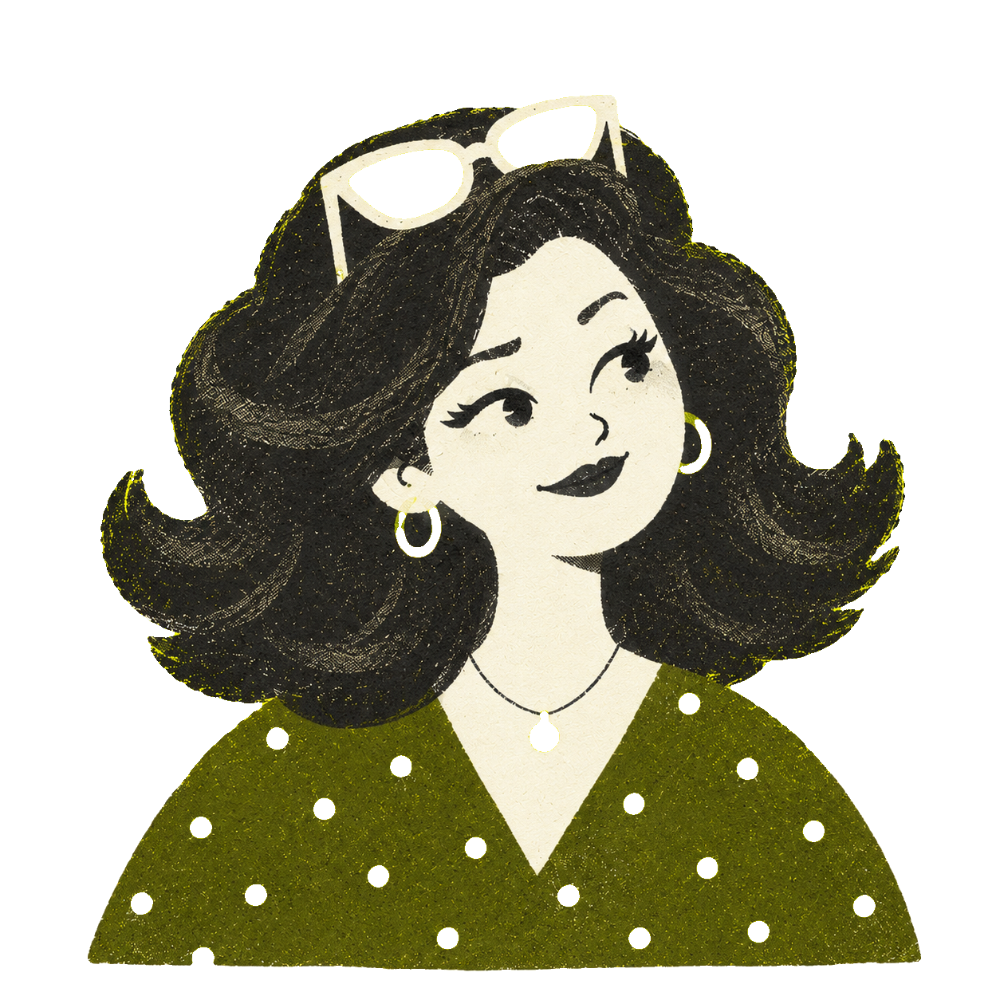
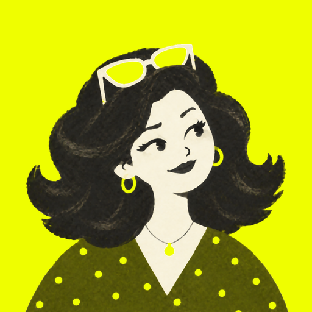
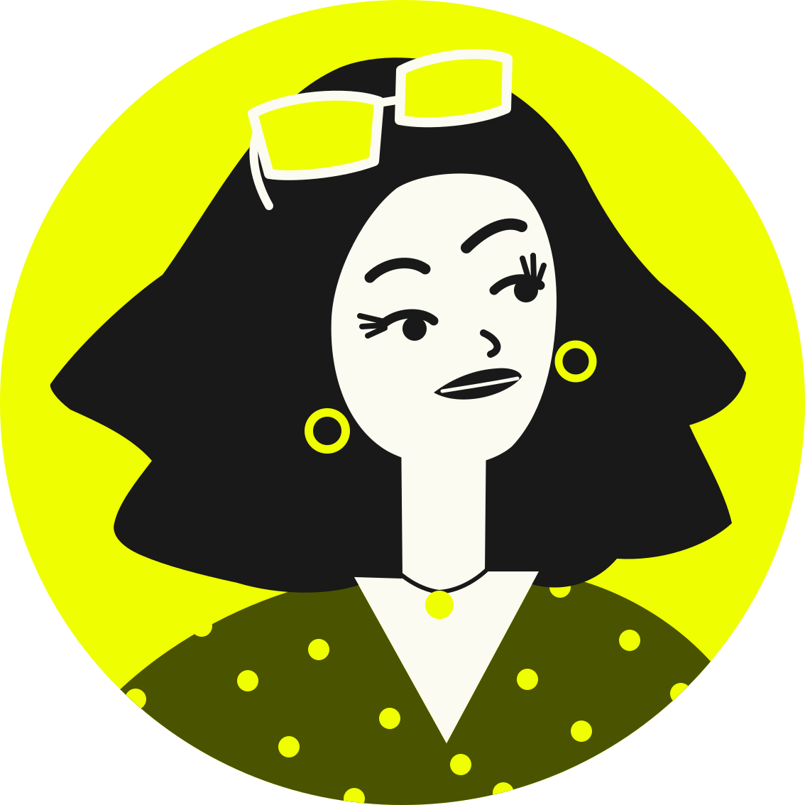
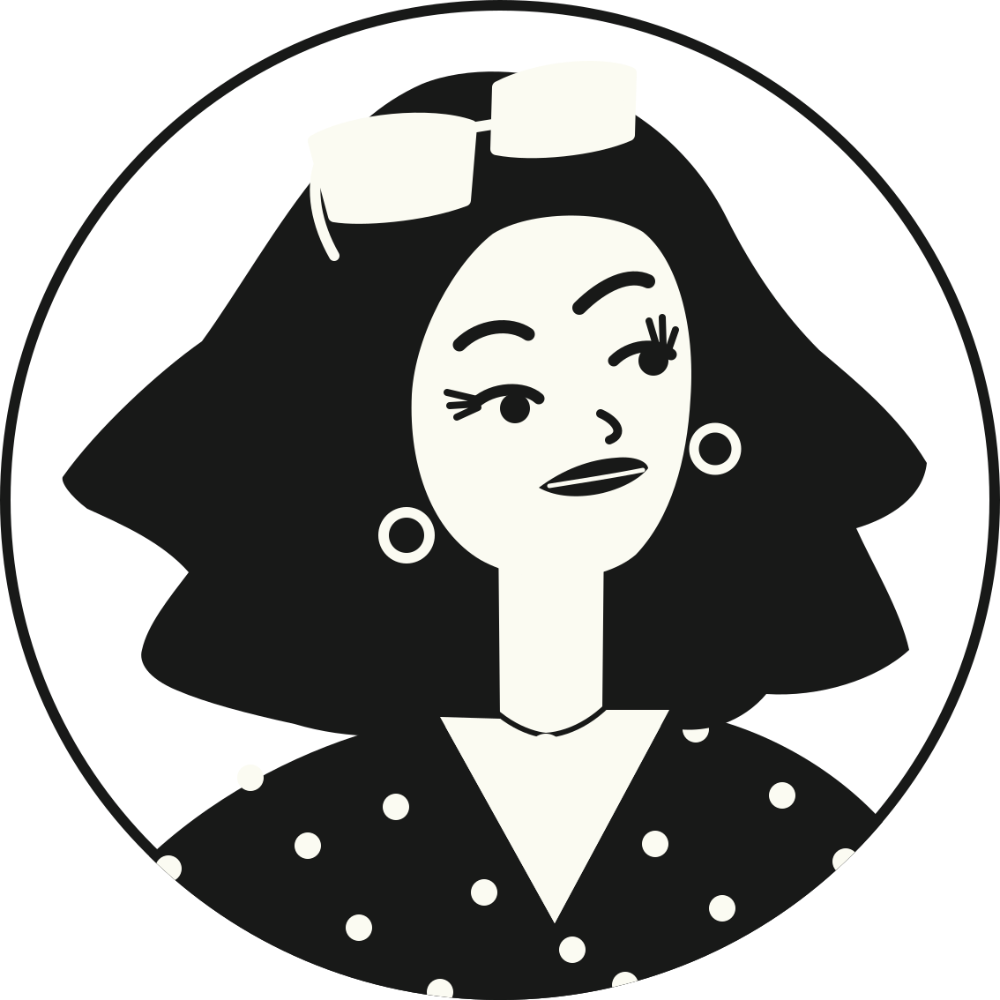
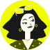
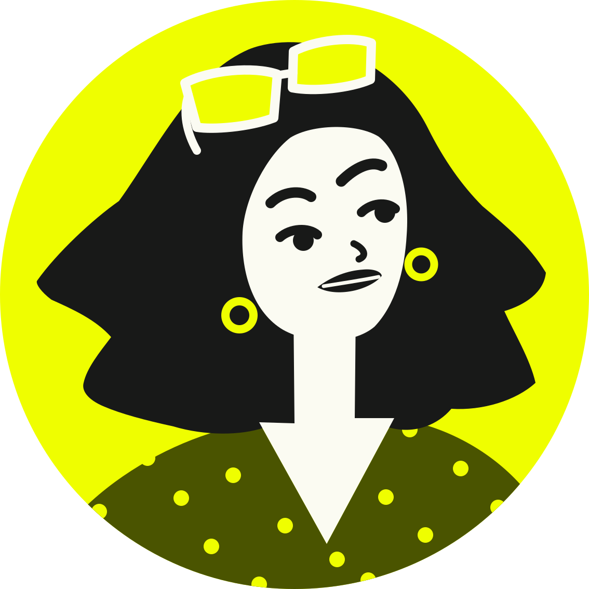
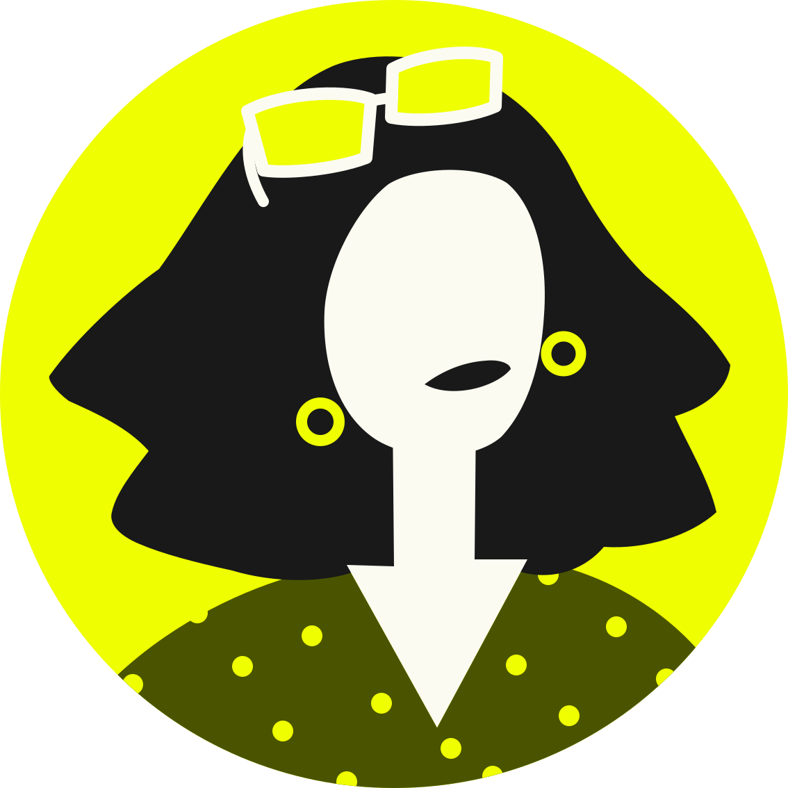

Recorte sin círculo
El dibujo riso tal cual, recortado del círculo (el fondo del ícono ya es chartreuse) y encuadrado para que el pelo llene la zona segura. Dos versiones: con el grano original y con el grano suavizado (mediana 7 px).


Mamá calcada sobre la ilustración, en tintas planas y sin grano: pelo, cara, lentes, argollas, blusa de lunares, cejas (la derecha levantada), pestañas, nariz, labios y la cadenita. Escala sin perder nitidez y da versión monocroma.



La misma silueta con menos rasgos, para ver qué sobrevive a 48 px. A: sin pestañas ni cadena, trazos más gruesos. B: solo lentes, argollas y labios.


MAMÁ en Lexend 700 (la fuente de la app) con ella como parte de la marca. a: su cabeza es el acento de la Á. b: marca a la izquierda. c: wordmark bajo el círculo.